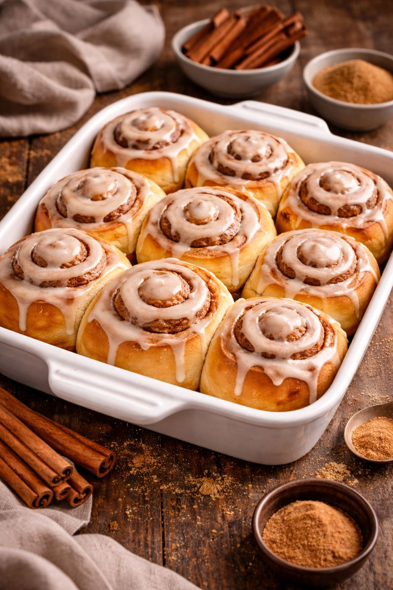

Homemade Cinnamon Rolls
Home

Description
There's nothing better than waking up to a fresh batch of ooey, gooey cinnamon rolls straight from the oven. This recipe starts with a soft, pillowy dough enriched with butter and milk. The dough is generously sprinkled with a mixture of butter, brown sugar, and cinnamon for a sweet and aromatic filling that will fill your kitchen as it bakes. Once out of the oven, these golden-brown beauties are crowned with a luscious cream cheese icing, adding a tanginess that balances the sweetness perfectly. Homemade cinnamon rolls are a nostalgic indulgence that brings joy to any breakfast or brunch table.
Ingredients
(for 14 servings)
- unsalted butter
- whole milk
- granulated sugar
- vanilla extract
- light brown sugar
- ground cinnamon
- salt
- active dry yeast
- baking powder
- powdered sugar
- cream cheese
DOUGH
- 115g - unsalted butter melted
- 480ml - whole milk, warm to the touch
- 100g - granulated sugar
- 8g - package of active dry yeast
- 625g - all-purpose flour, divided
- 4g - baking powder
- pinch of salt
FILLING
- 170g - softened butter
- 165g - light brown sugar
- 2 tablespoons ground cinnamon
FROSTING
- 113g - softened cream cheese
- 2 tablespoons of melted butter
- 2 tablespoons whole milk
- 1 teaspoon vanilla extract
- 120g - powdered sugar
Preparation
- Generously butter two disposable foil pie/cake pans.
- In a large bowl, whisk together warm milk, melted butter, and granulated sugar. The mixture should be just warm, registering between 37-43˚C. If it is hotter, allow to cool slightly.
- Sprinkle the yeast evenly over the warm mixture and let set for 1 minute.
- Add 500g of all-purpose flour to the milk mixture and mix with a wooden spoon until just combined.
- Cover the bowl with a towel or plastic wrap and set in a warm place to rise for 1 hour.
- After 1 hour, the dough should have nearly doubled in size.
- Remove the towel and add an additional 95g of flour, the baking powder, and salt. Stir well, then turn out onto a well-floured surface.
- Knead the dough lightly, adding additional flour as necessary, until the dough just loses its stickiness and does not stick to the surface.
- Roll the dough out into a large rectangle, about 1 cm thick. Fix corners to make sure they are sharp and even.
- Spread the softened butter, cinnamon and sugar mixture evenly over the dough.
- Roll up the dough, forming a log, and pinch the seam closed. Place seam-side down. Trim off any unevenness on either end.
- Cut the log in half, then divide each half into 7 evenly sized pieces. About 8cm thick each.
- Place 7 cinnamon rolls in each cake pan, one in the center, six around the sides. Cover with plastic wrap and place in a warm place to rise for 30 minutes.
- Preheat oven to 350˚F (180˚C).
- To prepare the frosting. In a medium-size mixing bowl, whisk together cream cheese, butter, whole milk, vanilla, and powdered sugar, until smooth.
- Remove plastic wrap. Bake the cinnamon rolls in a preheated oven for 25-30 minutes, until golden brown.
- While still warm, drizzle evenly with frosting.
- Enjoy!
Cook Time: 30min
Prep Time: 30min
Total Time: 2h 30min
Nutrition Info
- Calories: 479
- Fat: 22g
- Carbs: 63g
- Fiber: 1g
- Sugar: 24g
- Protein: 7g